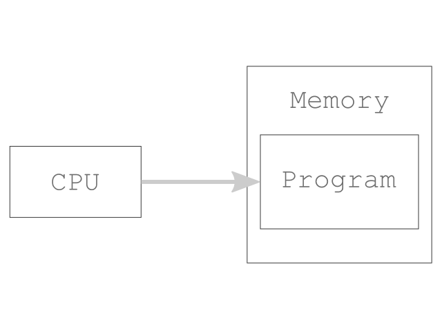
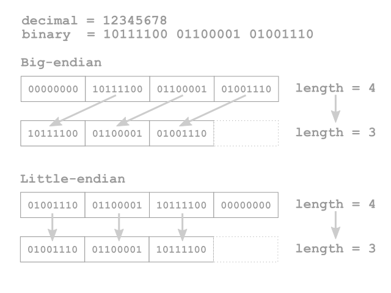
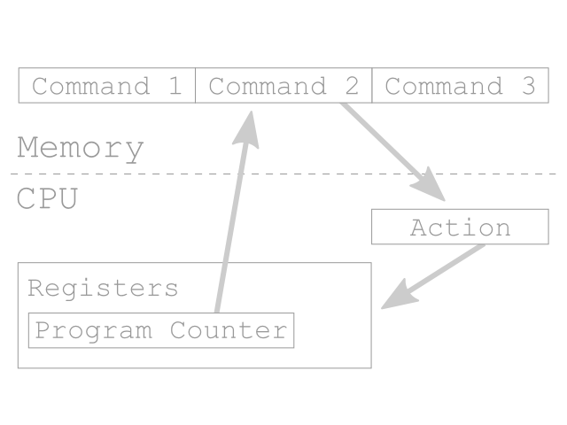

10♀だがJavaScriptでコンピュータつくってドヤ顔してみた
- 1 ：以下、名無しにかわりましてVIPがお送りします：2013/12/02(月) 00:18:34.83 ID:6O+JQ69t0 ?PLT(41456)
-

俺だ
いまからここをAizu Advent Calendar 2日目に捧ぐスレッドとする
抵抗しても無駄だ
※ 本来、技術系アドベントカレンダーといわれる催しでは
※ ブログやチラシの裏に日替わりで何か記事を書いたりすることが多い
※
※ 俺は2ちゃんねるとか全く知らないし何のことやら全然よくわからないが
※ 2ちゃんねるでアドベントカレンダーやってる人を見たことなかったので
※ 新しい試みとしてVIPでやることにした。ごめんなさい
※
※ Aizu Advent Calendar 2013
※ http://atnd.org/events/45075
※ 技術系アドベントカレンダーについて
※ http://www.atmarkit.co.jp/fjava/column/andoh/andoh59.html
※ "俺がLinuxのUbuntuを使ってドヤ顔するスレ"（スレタイをパクった）
※ http://blog.livedoor.jp/itsoku/archives/34741484.html
※
※ dat落ちしたこのスレッドを読もうとしてるお前へ（過去ログの保管予定地）
※ http://docs.yomogimochi.com/aizu_advent_calendar_2013/index.html
- 2 ：以下、名無しにかわりましてVIPがお送りします：2013/12/02(月) 00:19:17.50 ID:SkzB9v7B0
- よっしゃズボン脱いだ
- 3 ：以下、名無しにかわりましてVIPがお送りします：2013/12/02(月) 00:22:09.52 ID:6O+JQ69t0 ?PLT(41456)
-
いきなりすぎて何のことやらさっぱりかもしれないので
とりあえずこれからやることについて説明しておこう
スレタイに書いたとおり今回はJavaScriptというプログラミング言語を使って
ちょっとしたコンピュータのエミュレータのようなものをつくっていこうかと思う
よくあるゲーム機のエミュレータのような本格的なエミュレータではなくて
触り程度の簡単なものだ
このスレッドでは途中経過を公開していきながら俺が知ってる範囲で解説を加えていく
- 4 ：以下、名無しにかわりましてVIPがお送りします：2013/12/02(月) 00:24:06.76 ID:71Inb3Qz0
- 釣りか？
- 5 ：以下、名無しにかわりましてVIPがお送りします：2013/12/02(月) 00:26:05.21 ID:6O+JQ69t0 ?PLT(41456)
-
>>2
暖かくして風邪を引かないようにしろ
>>4
釣りじゃないよ！
- 6 ：以下、名無しにかわりましてVIPがお送りします：2013/12/02(月) 00:27:48.52 ID:71Inb3Qz0
- てｓ
- 7 ：以下、名無しにかわりましてVIPがお送りします：2013/12/02(月) 00:29:17.04 ID:6O+JQ69t0 ?PLT(41456)
-
これから俺がお前らに伝授するノウハウを駆使すれば
こういうものがつくれるようになるはずだ
http://yomogimochi.com/jsgb/index.html
でも俺は専門家じゃないのでこれから紹介する内容は
話半分の参考程度に留めておいてもらいたい
もしも興味が湧いたら真似して取り組んでみるといいだろう
- 8 ：以下、名無しにかわりましてVIPがお送りします：2013/12/02(月) 00:33:06.83 ID:6O+JQ69t0 ?PLT(41456)
-
ちなみに進行途中でスレッドが落ちてもご愛嬌だ
- 9 ：以下、名無しにかわりましてVIPがお送りします：2013/12/02(月) 00:38:31.64 ID:6O+JQ69t0 ?PLT(41456)
-
さて、パソコンに詳しい人はよく知っていることだろう
パソコンの内部には俗に言う"CPU"や"メモリ"と呼ばれるものが入っている
今回はこれらをプログラムとして表現するのが目標だ
- 10 ：以下、名無しにかわりましてVIPがお送りします：2013/12/02(月) 00:39:21.04 ID:+aAKkT960
- ｗｋｔｋ
- 11 ：以下、名無しにかわりましてVIPがお送りします：2013/12/02(月) 00:40:51.51 ID:mI8sx62h0
- 20♂になったらC++でOS作れよ
- 12 ：以下、名無しにかわりましてVIPがお送りします：2013/12/02(月) 00:43:26.36 ID:6O+JQ69t0 ?PLT(41456)
-
>>10
ｇｋｇｋｂｒｂｒ
>>11
10年後にOSの作り方講座やるか
- 13 ：以下、名無しにかわりましてVIPがお送りします：2013/12/02(月) 00:43:37.64 ID:saCxmqfK0
- そんなことより、ハッカーてどうやったらなれるのん？
- 14 ：以下、名無しにかわりましてVIPがお送りします：2013/12/02(月) 00:45:31.56 ID:6O+JQ69t0 ?PLT(41456)
-
>>13
つ http://ksnctf.sweetduet.info/
- 15 ：以下、名無しにかわりましてVIPがお送りします：2013/12/02(月) 00:45:37.95 ID:71Inb3Qz0
- D言語でもOS書けるらしいんだけど、ほんとなん？
- 16 ：以下、名無しにかわりましてVIPがお送りします：2013/12/02(月) 00:46:05.38 ID:6O+JQ69t0
- 現在広く普及しているノイマン型コンピュータで何かプログラムを実行しようとするとき
記憶装置からプログラムとして実行したいデータを読みだしてメモリ上に複製し
メモリ上に配置されたプログラムをCPUが順に解釈するというような手順を踏む
- 17 ：以下、名無しにかわりましてVIPがお送りします：2013/12/02(月) 00:47:11.39 ID:Ba5hE5Y00
- COMET IIのプログラムを処理するプログラムっぽいものなら
少しだけ作ったことがあるがそのレベルだなぁ。
その程度の人でも理解できるのかな？
- 18 ：以下、名無しにかわりましてVIPがお送りします：2013/12/02(月) 00:51:55.91 ID:6O+JQ69t0
- >>15
D言語なら何でも出来る気がする……！
>>17
すごい！！
このスレッドはそういう人だったら余裕で理解できるような内容にしたいと思ってる
でもまぁ>>7にも書いたとおり専門家じゃないのであまり期待しないほうがいいな
- 19 ：以下、名無しにかわりましてVIPがお送りします：2013/12/02(月) 00:54:43.13 ID:6O+JQ69t0
- CPUとメモリ上のプログラムの関係について図にしておいた
簡単な図で悪いがこういうイメージだ

- 20 ：以下、名無しにかわりましてVIPがお送りします：2013/12/02(月) 00:59:02.93 ID:mI8sx62h0
- 期待あげ
- 21 ：17：2013/12/02(月) 01:00:20.70 ID:Ba5hE5Y00
- >>18
yomogimochi.com/jsgb/index.html
が全く理解できなかったから不安になってたのん。
一応2問目がなんか文字列置換で3問目は例のVMを通せばいいってことはわかったけど
めんどくなったｗ
- 22 ：以下、名無しにかわりましてVIPがお送りします：2013/12/02(月) 01:00:24.02 ID:6O+JQ69t0 ?PLT(41456)
-
それはさておき、エミュレータを作成するにあたって
まずはこれからつくるコンピュータの仕様を決めよう
とりあえず数字の部分から
CPUの動作周波数は 1 MHz
アドレス空間は 16 ビットで表現できる範囲
メモリのサイズは 64 KBとする
スーパーロースペックだがエミュレータの題材としては丁度いいだろう
- 23 ：以下、名無しにかわりましてVIPがお送りします：2013/12/02(月) 01:00:55.48 ID:71Inb3Qz0
- あげぽよ～
- 24 ：以下、名無しにかわりましてVIPがお送りします：2013/12/02(月) 01:02:51.49 ID:qE7IrRYM0
- 期待
- 25 ：以下、名無しにかわりましてVIPがお送りします：2013/12/02(月) 01:02:54.80 ID:Ba5hE5Y00
- ｗｋｔｋ
- 26 ：以下、名無しにかわりましてVIPがお送りします：2013/12/02(月) 01:05:35.62 ID:6O+JQ69t0 ?PLT(41456)
-
>>21
なるほど、URL先はゲームボーイのエミュレータもどきだ
これもJavaScriptで書いてる
これからやるのはCOMET IIのシミュレーションと比べると
ちょっとハードウェアとか機械的な部分に近づくけれど
基本的な流れは似たような感じになるんじゃないかな
- 27 ：以下、名無しにかわりましてVIPがお送りします：2013/12/02(月) 01:06:58.44 ID:Fbq4JXEy0
- 全部読んだがよくわからん
俺の時間返せえ
- 28 ：以下、名無しにかわりましてVIPがお送りします：2013/12/02(月) 01:10:55.86 ID:ZrJ6RWxO0
- 俺は寝るから落とさず完走しろよ
- 29 ：以下、名無しにかわりましてVIPがお送りします：2013/12/02(月) 01:12:20.11 ID:6O+JQ69t0 ?PLT(41456)
-
>>27
申し訳ございませんでしたあ！！
出てきた単語だけ覚えておけば将来役に立つかも
保障はしないが
>>28
おう、おやすみ
- 30 ：以下、名無しにかわりましてVIPがお送りします：2013/12/02(月) 01:13:58.15 ID:6O+JQ69t0 ?PLT(41456)
-
>>22追加
データの最小単位は一般的な 1 バイトとする
- 31 ：以下、名無しにかわりましてVIPがお送りします：2013/12/02(月) 01:17:23.07 ID:6O+JQ69t0 ?PLT(41456)
-
メモリ上などで数値データを表現するときに
バイトオーダーという順番や並べ方の規則がある
リトルエンディアンとかビッグエンディアンとかのこと
これは情報処理技術者試験などでよく出題されているので
聞き覚えがある人もいるかもしれない
- 32 ：以下、名無しにかわりましてVIPがお送りします：2013/12/02(月) 01:20:04.80 ID:6O+JQ69t0 ?PLT(41456)
-
例えば 123 を 2 進数で表すと 1111011 となり 1 バイト（ 2 進数で 8 桁）で収まる
しかし 1 桁増やした 1234 は 2 進数で表すと
10011010010 となって 1 バイトを超える
こういうときは単純に 1 バイト追加して
00000100, 11010010 と 2 バイトのデータとして表現すればいいが
ここで分割したデータをどういう順番でメモリ上に並べるかというルールが必要になってくる
- 33 ：以下、名無しにかわりましてVIPがお送りします：2013/12/02(月) 01:24:50.69 ID:6O+JQ69t0 ?PLT(41456)
-
一般的にはリトルエンディアンという並べ方が使われていて
さきほどの場合（1234）であれば 11010010, 00000100 という
逆向きの順番でデータが記録される
逆順にする理由はデータ長を変更することを考えると分かりやすい
- 34 ：以下、名無しにかわりましてVIPがお送りします：2013/12/02(月) 01:27:13.26 ID:E+KcQeNC0
- 俺は寝るが落とすなよ
- 35 ：以下、名無しにかわりましてVIPがお送りします：2013/12/02(月) 01:29:37.10 ID:6O+JQ69t0
- >>34
尽力する。おやすみ！
あとでここにログを上げるので眠い人はURLメモして寝るといいと思う
http://docs.yomogimochi.com/aizu_advent_calendar_2013/index.html
- 36 ：以下、名無しにかわりましてVIPがお送りします：2013/12/02(月) 01:33:02.71 ID:6O+JQ69t0 ?PLT(41456)
-
次の画像は見たままで並べるビッグエンディアンと
逆順にするリトルエンディアンを比べた図

ビッグエンディアンの場合は縮小前にデータを移動させる必要があるが
リトルエンディアンの場合は長さを切り詰めるだけで済む
- 37 ：以下、名無しにかわりましてVIPがお送りします：2013/12/02(月) 01:37:37.56 ID:6O+JQ69t0 ?PLT(41456)
-
どちらにも一長一短があるわけだが
今回のコンピュータではリトルエンディアン方式を使う
- 38 ：以下、名無しにかわりましてVIPがお送りします：2013/12/02(月) 01:43:25.43 ID:6O+JQ69t0 ?PLT(41456)
-
CPUの内部にもレジスタという小さな記憶装置が入っている
一般的には用途によって名前が付けられることが多い
今回は以下のような構成にする
アキュムレータ（A）：
演算結果を入れたりするレジスタ
フラグレジスタ（F）：
計算時の状態などを管理するレジスタ（繰り上がりなど）
プログラムカウンタ（PC）：
メモリ上でプログラムが存在する位置（アドレス）を指定するレジスタ
スタックポインタ（SP）：
スタック操作用のレジスタ。スタック操作についてはあとで説明する
汎用レジスタ（RA, RB, RC, RD）：
自由に利用できるレジスタ
今回、レジスタの容量はすべて 2 バイトとする
- 39 ：!omikuji：2013/12/02(月) 01:46:15.79 ID:vrZ4IBhl0
- 期待
同じ情報を学ぶものとして
- 40 ：以下、名無しにかわりましてVIPがお送りします：2013/12/02(月) 01:50:15.44 ID:6O+JQ69t0
- >>39
お、仲間か。期待にそえるか分からんが頑張るわ
- 41 ：以下、名無しにかわりましてVIPがお送りします：2013/12/02(月) 01:53:59.12 ID:3dbyolsn0
- 久々に有能な>>1
スレタイのセンスは無いが
- 42 ：以下、名無しにかわりましてVIPがお送りします：2013/12/02(月) 01:56:22.44 ID:6O+JQ69t0
- >>41
このスレタイの完成度が理解できないとは……残念だな！
- 43 ：以下、名無しにかわりましてVIPがお送りします：2013/12/02(月) 01:59:06.90 ID:6O+JQ69t0 ?PLT(41456)
-
それではまずメモリをプログラムとして表現していこう
単にメモリといっても本来はとても複雑な電子回路があって
例えばアドレスを受け取って解読する部分や
指定された位置のデータを入出力する部分
そしてそれらを制御する部分があったりするわけだが
今回はそういった細かい部分を抽象化した簡単なものをつくる
（難しいものは手に負えない）
- 44 ：以下、名無しにかわりましてVIPがお送りします：2013/12/02(月) 02:02:10.11 ID:3dbyolsn0
- >>14
スレ違いで申し訳ないがVillager Aのヒント下さい・・・
ファーマットストリング攻撃というのは解るんだが、その先が・・・
- 45 ：以下、名無しにかわりましてVIPがお送りします：2013/12/02(月) 02:04:29.20 ID:3dbyolsn0
- >>44
?ファーマット
○フォーマット
- 46 ：以下、名無しにかわりましてVIPがお送りします：2013/12/02(月) 02:06:41.45 ID:6O+JQ69t0
- >>44-45
方針はあってる！
即興で書いたからあれだけどこれがヒントになるかも
http://ideone.com/H48bBU
- 47 ：以下、名無しにかわりましてVIPがお送りします：2013/12/02(月) 02:07:24.71 ID:71Inb3Qz0
- ksnctfやってる奴いるうううう
- 48 ：以下、名無しにかわりましてVIPがお送りします：2013/12/02(月) 02:08:31.52 ID:6O+JQ69t0
- うっひょおおおおあああ
- 49 ：以下、名無しにかわりましてVIPがお送りします：2013/12/02(月) 02:09:18.88 ID:3dbyolsn0
- >>46
thx
頑張る！
- 50 ：以下、名無しにかわりましてVIPがお送りします：2013/12/02(月) 02:10:19.35 ID:6O+JQ69t0
- >>49
頑張って！
- 51 ：以下、名無しにかわりましてVIPがお送りします：2013/12/02(月) 02:14:33.32 ID:Ff6nuGxN0
- 俺は今VHDLで同じようなことしてるよ
- 52 ：以下、名無しにかわりましてVIPがお送りします：2013/12/02(月) 02:16:24.62 ID:6O+JQ69t0
- >>51
カッコいい
- 53 ：以下、名無しにかわりましてVIPがお送りします：2013/12/02(月) 02:16:55.83 ID:jxtfzg990
- これはおっさん
- 54 ：以下、名無しにかわりましてVIPがお送りします：2013/12/02(月) 02:18:15.14 ID:6O+JQ69t0
- >>53
（＾ω＾）
- 55 ：以下、名無しにかわりましてVIPがお送りします：2013/12/02(月) 02:19:24.03 ID:71Inb3Qz0
- マンデルブロ集合
- 56 ：以下、名無しにかわりましてVIPがお送りします：2013/12/02(月) 02:19:41.93 ID:6O+JQ69t0 ?PLT(41456)
-
……というわけで簡易的ではあるが
メモリの内容を確認したり書き込みを行えるものをつくった
公開したので試してみて欲しい。一応スクリーンショットも用意してある
お試し用
http://docs.yomogimochi.com/9f5b9fa15b8302eb735145c47b831e6eb3aaffbd/memory_test.html
スクリーンショット

ソースコード
https://github.com/sh19910711/aizu_advent_calendar_2013/tree/9f5b9fa15b8302eb735145c47b831e6eb3aaffbd
memory.jsというファイルにメモリに関する記述が含まれている
特筆することも少ないのだが少しだけ説明をしよう
- 57 ：以下、名無しにかわりましてVIPがお送りします：2013/12/02(月) 02:22:17.31 ID:6O+JQ69t0
- >>55
なるほど
- 58 ：以下、名無しにかわりましてVIPがお送りします：2013/12/02(月) 02:27:39.94 ID:6O+JQ69t0
- https://github.com/sh19910711/aizu_advent_calendar_2013/blob/9f5b9fa15b8302eb735145c47b831e6eb3aaffbd/memory.js#L19-L29
データの入出力部分を表しているのは上記のページの強調表示されている部分
ビット演算を利用してデータを 1 バイト分に矯正している
- 59 ：以下、名無しにかわりましてVIPがお送りします：2013/12/02(月) 02:28:53.80 ID:sX/WM57uP
- 女だけど→おっさん
うｐはしない→おっさん
うｐって何？→おっさん
うｐめんどい→おっさん
うｐレススルー→おっさん
うｐしてもID無し→おっさん
うｐの仕方わかんない→おっさん
携帯、カメラ無いor壊れてる→おっさん
じゃあおっさんでいいよ→最初からおっさん
- 60 ：以下、名無しにかわりましてVIPがお送りします：2013/12/02(月) 02:31:19.82 ID:6O+JQ69t0
- >>59
いま素で「じゃあおっさんでいいよ」って書こうとしてたわ……
- 61 ：以下、名無しにかわりましてVIPがお送りします：2013/12/02(月) 02:32:11.06 ID:3dbyolsn0
- まあ22歳はおっさんじゃないわな
- 62 ：以下、名無しにかわりましてVIPがお送りします：2013/12/02(月) 02:34:09.47 ID:6O+JQ69t0
- おっさんの俺とおっさんじゃない俺が存在する
シュレディンガーの俺ってそういうことだわな
- 63 ：以下、名無しにかわりましてVIPがお送りします：2013/12/02(月) 02:37:32.81 ID:71Inb3Qz0
- >>62
エヴェレット解釈か？
- 64 ：以下、名無しにかわりましてVIPがお送りします：2013/12/02(月) 02:37:32.74 ID:6O+JQ69t0 ?PLT(41456)
-
とりあえずメモリが形になったので次はCPUをプログラムとして表現していこう
- 65 ：以下、名無しにかわりましてVIPがお送りします：2013/12/02(月) 02:39:10.54 ID:6O+JQ69t0
- >>63
まぁな
- 66 ：以下、名無しにかわりましてVIPがお送りします：2013/12/02(月) 02:44:11.39 ID:6O+JQ69t0 ?PLT(41456)
-
CPUは機械語という数値データの列を解釈しながら動作する
簡単な図にしたものが次の画像だ

プログラムカウンタによって指定されている箇所から命令コードを取り出し
命令コードの長さだけプログラムカウンタをずらして実行する
基本的にこの繰り返しでコンピュータは動く
これもメモリと同じで俺の知ってる範囲でももう少し複雑な機構があるし
実際複雑なんだと思うが今回はある程度簡単にしたものをつくっていく
- 67 ：以下、名無しにかわりましてVIPがお送りします：2013/12/02(月) 02:50:07.12 ID:6O+JQ69t0 ?PLT(41456)
-
機械語について
一般的に機械語は命令の種類を表すオペコード部と
アドレスやデータを表すオペランド部に分かれる
小難しそうな名前がついているが実際は単なる数値データの組み合わせだ
- 68 ：以下、名無しにかわりましてVIPがお送りします：2013/12/02(月) 02:54:05.73 ID:6O+JQ69t0 ?PLT(41456)
-
オペコード部の長さは基本的に一定だが
オペランド部は命令によって長さが異なる
例えば 16 ビットのデータを受け取る命令なら 2 バイト必要になる
もちろん命令によってはオペランド部を指定しないこともありうる
どちらにしても曖昧だと困るのできちんと仕様として決めておく必要がある
- 69 ：以下、名無しにかわりましてVIPがお送りします：2013/12/02(月) 02:59:05.76 ID:6O+JQ69t0 ?PLT(41456)
-
例としてゲームボーイのCPUをみてみよう
"Gameboy (LR35902) OPCODES"
http://www.pastraiser.com/cpu/gameboy/gameboy_opcodes.html
非公式の情報だがゲームボーイに搭載されているCPUの命令リストだ
こうやってどの命令がどういう情報を必要とするかまとめると分かりやすい
（初めて見る人は何が何やら分からないかもしれない）
たくさんの命令があるが大部分は記憶装置にデータを記録したり
記録されたデータで演算を行うための機能が割り当てられている
- 70 ：以下、名無しにかわりましてVIPがお送りします：2013/12/02(月) 03:00:19.22 ID:YUW5fO0q0
- このCPUの命令セットはどれくらいのものなの？
- 71 ：以下、名無しにかわりましてVIPがお送りします：2013/12/02(月) 03:04:30.56 ID:6O+JQ69t0
- >>70
たぶんさっきのページに載ってるのがほとんどじゃないかな
もしかすると誰も知らない隠された機能があるかもしれないけどね
- 72 ：以下、名無しにかわりましてVIPがお送りします：2013/12/02(月) 03:06:04.67 ID:AQSB34Vy0
- 良スレ期待
- 73 ：以下、名無しにかわりましてVIPがお送りします：2013/12/02(月) 03:06:42.70 ID:sspHQSfO0
- おっぱいうｐ
- 74 ：以下、名無しにかわりましてVIPがお送りします：2013/12/02(月) 03:10:28.55 ID:6O+JQ69t0
- >>72
眠くなってきた
>>73
つ (・ )( ・)
- 75 ：以下、名無しにかわりましてVIPがお送りします：2013/12/02(月) 03:14:35.23 ID:6O+JQ69t0 ?PLT(41456)
-
そういえば>>68でオペコードは基本的に一定と書いたのは
ゲームボーイに搭載されてるCPUにはCB-prefixっていうのがあって
オペコード部が 16 進数でみたときに CB で始まる場合は
もう 1 バイトがオペコードになる（CB XX みたいに並ぶ）
これをオペコードとみなすかどうかは俺にはよく分からないのだが
こうやってオペコードの範囲を拡張することもできなくはない
- 76 ：以下、名無しにかわりましてVIPがお送りします：2013/12/02(月) 03:23:06.14 ID:GxiKw0fm0
- CSSを勉強したから今度はjavascriptやろうと思ってるけど基本すら理解できないや
- 77 ：以下、名無しにかわりましてVIPがお送りします：2013/12/02(月) 03:27:47.61 ID:6O+JQ69t0
- >>76
ナイスだな。まずは習うより慣れろでjQueryを使ってみるといいと思う
あとでちょっと詳しく学んだときに
「jQueryのあの機能はこれでやってたのか！」みたいな感じで
学習を進めやすくなる気がする（気のせいかもしれない）
- 78 ：以下、名無しにかわりましてVIPがお送りします：2013/12/02(月) 03:31:34.74 ID:6O+JQ69t0 ?PLT(41456)
-
というわけでCPU部分のベース的な部分をつくっておいた
これも公開しておいたので試してみてほしい
ちょっと手間取ってスクリーンショットは用意できなかった
お試し用
http://docs.yomogimochi.com/a4f0803caefee6b63b048f49cd2ab8f010ef29a5/cpu_test.html
ソースコード
https://github.com/sh19910711/aizu_advent_calendar_2013/tree/a4f0803caefee6b63b048f49cd2ab8f010ef29a5
cpu.jsがCPUを表現している部分
いまは「何もしない命令」という命令だけを搭載している
[ステップ実行]というボタンをクリックしたりすると
「何もしないコマンド」が実行されてプログラムカウンタが空回りするはずだ
- 79 ：以下、名無しにかわりましてVIPがお送りします：2013/12/02(月) 03:36:18.69 ID:6O+JQ69t0 ?PLT(41456)
-
ちなみにここから先の進行については書き溜めなんてチャチなもんはない
どういうことかというと
俺 が リ ア ル タ イ ム だ
ということ
- 80 ：以下、名無しにかわりましてVIPがお送りします：2013/12/02(月) 03:37:36.92 ID:6O+JQ69t0 ?PLT(41456)
-
念のためにもう一度書いておく。それはつまり
俺 が リ ア ル タ イ ム だ
ということ
- 81 ：以下、名無しにかわりましてVIPがお送りします：2013/12/02(月) 03:40:06.89 ID:GxiKw0fm0
- よくわかんないけど大丈夫なの？
- 82 ：以下、名無しにかわりましてVIPがお送りします：2013/12/02(月) 03:41:53.84 ID:6O+JQ69t0
- >>81
もう少しだけ頑張るよ
- 83 ：以下、名無しにかわりましてVIPがお送りします：2013/12/02(月) 03:42:57.91 ID:GxiKw0fm0
- この時間は本格的に人がいなくなるよ
俺はあとからでもまとめて読むつもりだけど
- 84 ：以下、名無しにかわりましてVIPがお送りします：2013/12/02(月) 03:43:58.97 ID:6O+JQ69t0
- >>83
ありがとう！
- 85 ：以下、名無しにかわりましてVIPがお送りします：2013/12/02(月) 03:44:27.81 ID:3dbyolsn0
- JSで実装するにあたって何処らへんが大変だった？
- 86 ：以下、名無しにかわりましてVIPがお送りします：2013/12/02(月) 03:48:52.98 ID:6O+JQ69t0
- >>85
C言語みたいにデータ型がなくて流動的だから
バグが出ても気が付きにくい
よく言われることかもだがこれがやっぱり大変かな
バグに気づきさえすればデバッグツールは割りと充実してるんだけどね
- 87 ：以下、名無しにかわりましてVIPがお送りします：2013/12/02(月) 03:54:09.91 ID:6O+JQ69t0 ?PLT(41456)
-
最後に>>78で上げたプログラムについて少し説明しておこう
- 88 ：以下、名無しにかわりましてVIPがお送りします：2013/12/02(月) 03:54:28.05 ID:3dbyolsn0
- >>86
そこら辺はアノテーション付けてclosure compiler通せば何とかなんじゃね？
ところで進路決まってる？
- 89 ：以下、名無しにかわりましてVIPがお送りします：2013/12/02(月) 03:59:52.12 ID:6O+JQ69t0
- >>88
closureはよく知らないんだよな。今度調べてみるわ
進路のことはプライベートなのでノーコメントってことでよろしく（＾ω＾）
- 90 ：以下、名無しにかわりましてVIPがお送りします：2013/12/02(月) 04:01:49.20 ID:3dbyolsn0
- >>89
なかなか便利よ
https://developers.google.com/closure/compiler/docs/js-for-compiler?hl=ja
そろそろ寝るわ、おやすみ
- 91 ：以下、名無しにかわりましてVIPがお送りします：2013/12/02(月) 04:03:41.19 ID:6O+JQ69t0
- >>90
おぉ、ｻﾝｸｽｻﾝｸｽ
遅くまで付き合ってくれてありがとうな。おやすみ
- 92 ：以下、名無しにかわりましてVIPがお送りします：2013/12/02(月) 04:10:47.69 ID:6O+JQ69t0 ?PLT(41456)
-
基本的にはプログラムカウンタが示しているメモリ上の位置から
データを取り出してそれを命令の番号とみなしている
https://github.com/sh19910711/aizu_advent_calendar_2013/blob/a4f0803caefee6b63b048f49cd2ab8f010ef29a5/cpu.js#L32-L34
具体的にはこの部分
この直後に取得した命令番号に対応する処理を取得し
それを実際に実行している
JavaScriptには関数式という仕組みがあって
関数を普通の変数と同じように扱うことができるため
この部分はわりかし直感的な記述ができた
- 93 ：以下、名無しにかわりましてVIPがお送りします：2013/12/02(月) 04:14:49.55 ID:6O+JQ69t0 ?PLT(41456)
-
https://github.com/sh19910711/aizu_advent_calendar_2013/blob/a4f0803caefee6b63b048f49cd2ab8f010ef29a5/cpu.js#L68-L72
命令番号に対応する処理を記述しているのはこの部分だ
何か命令を追加する場合にはここに追記していくことになる
- 94 ：以下、名無しにかわりましてVIPがお送りします：2013/12/02(月) 04:21:40.79 ID:6O+JQ69t0 ?PLT(41456)
-
本来の予定ではこのあと幾つかの命令を追加して
ライフゲームというプログラミング入門の題材としてよく扱われるゲームを
エミュレータ上で動かそうと思っていたのだが
これは宿題にしよう
実際エミュレータをつくるとき
このあとの命令を追加していく作業はかなり泥臭い感じになる
どのくらい泥臭いかというと説明するのは難しいのだが
次のコードを見てくれれば雰囲気は分かるかもしれない
https://github.com/sh19910711/yomogimochi.com/blob/8d9f93bfa2f28d6a377463bee8a276aa5a4de3ad/jsgb/cpu.js
これは>>7で紹介したエミュレータのCPUの部分のソースコードだ
- 95 ：以下、名無しにかわりましてVIPがお送りします：2013/12/02(月) 04:33:16.19 ID:6O+JQ69t0 ?PLT(41456)
-
さて、時間の兼ね合いで全部というわけにはいかなかったが
エミュレータを製作するために必要な知識を今回は一部紹介してみた
自分で記述したプログラムの上で
また別のプログラムが動く感覚というのはエミュレータならでは
不思議で面白いものだと思うのでよければぜひ挑戦してみてほしい
- 96 ：以下、名無しにかわりましてVIPがお送りします：2013/12/02(月) 04:35:08.81 ID:cB4k5f8d0
- すげえ
- 97 ：以下、名無しにかわりましてVIPがお送りします：2013/12/02(月) 04:41:02.54 ID:6O+JQ69t0 ?PLT(41456)
-
というわけでもう眠くて仕方ないのでここらで切り上げる
Aizu Advent Calendarっていう企画はまだまだ続くので
よかったらたまに覗いてくれ
http://atnd.org/events/45075
何度も書いてるがログは後日以下のページにまとめておく
http://docs.yomogimochi.com/aizu_advent_calendar_2013/index.html
では、お疲れ様でした。そしておやすみ！
29 KB
[ ２ちゃんねる ３億PV/日をささえる レンタルサーバー \877/2TB/100Mbps]
2ちゃんねる
元スレッド
よもぎもち
read.cgi ver 05.2.2.0 2013/10/11 あっク ★
FOX ★ DSO(Dynamic Shared Object)